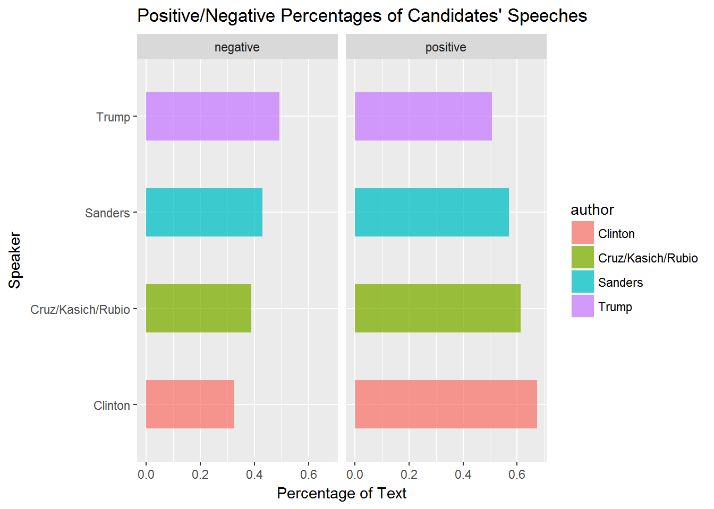
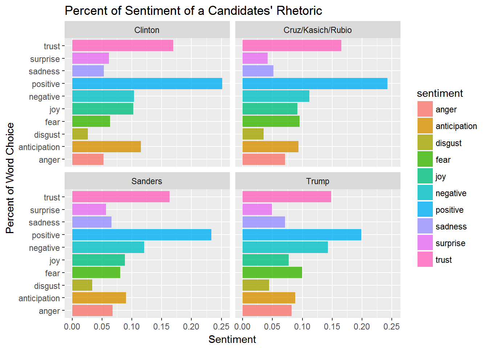
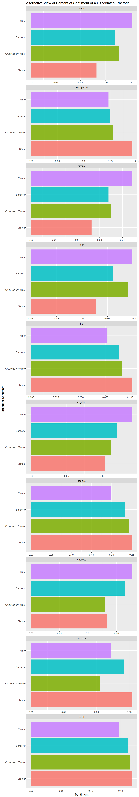
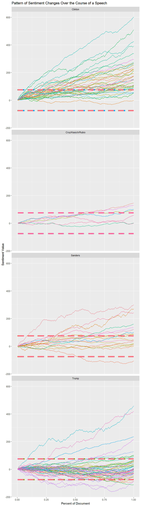
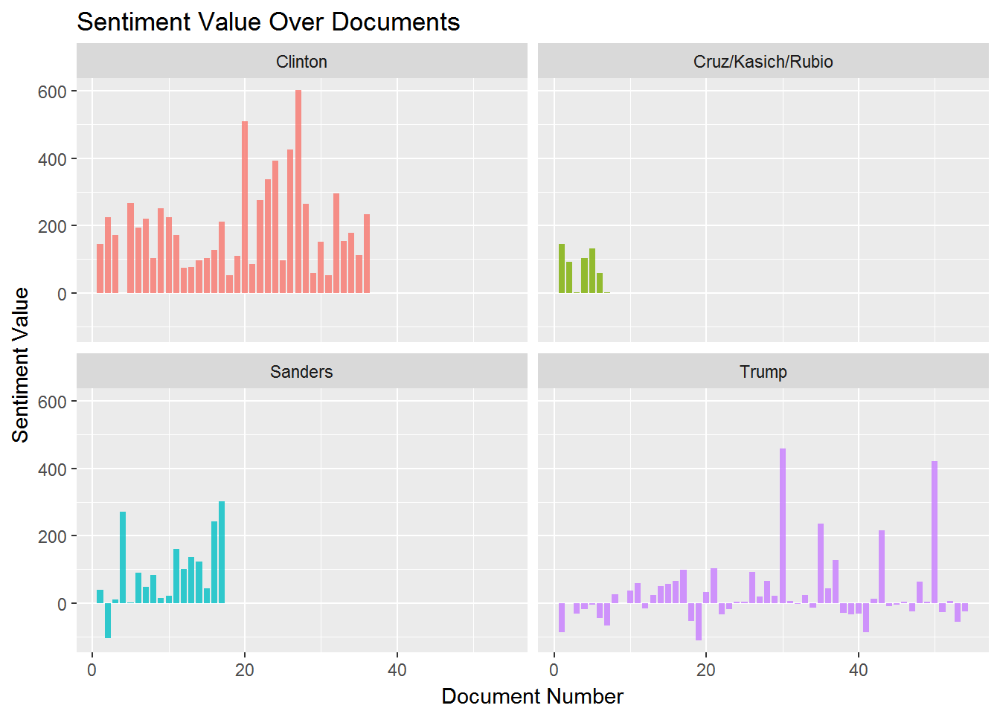
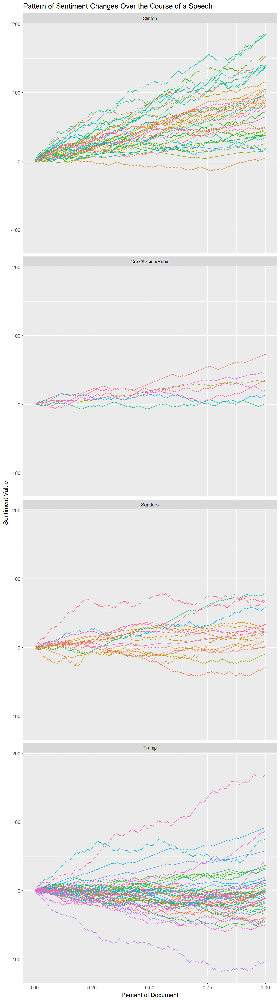
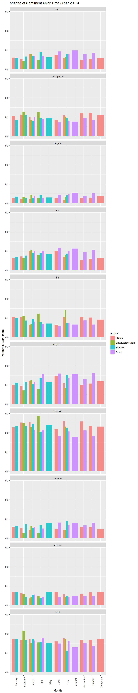

When we think about language, words have definitions and connotations. In sentiment analysis, we attempt examine the differences in these connotations. This may be as simple as determining if a word implies more negative thoughts and feelings or more positive ones. It may be that a word invokes particular emotions like trust or anger. So, how does it work? Thankfully, individuals have gone through large quantities of words and created sentiment dictionaries that determine this connotation around a word. By overlapping the words in those dictionaries with our corpus of words, we can assign sentiment values to our words. However, one of the problems is that the English dictionary is much larger than any sentiment dictionary. It is actually quite time consuming to go through and accurately assess a sentiment of a given word because these sentiments change and vary among people. In the process of assigning our words sentiment, we end up losing a number of our words because these sentiment dictionaries simply do not have the word. Although we do have to sacrifice some of our sample size, we do still retain tens of thousands of the words in our corpus which should be a robust sample size to provide a picture of the type of rhetoric our candidates use.

| author | sentiment | n | percent |
|---|---|---|---|
| Clinton | negative | 2812 | 0.3254630 |
| Clinton | positive | 5828 | 0.6745370 |
| Cruz/Kasich/Rubio | negative | 393 | 0.3879566 |
| Cruz/Kasich/Rubio | positive | 620 | 0.6120434 |
| Sanders | negative | 1368 | 0.4295133 |
| Sanders | positive | 1817 | 0.5704867 |
| Trump | negative | 4554 | 0.4928571 |
| Trump | positive | 4686 | 0.5071429 |
Starting off basic, we are simply examining the percentage of a candidates’ speech either uses more words with positive connotation or more words with negative connotation. As we see, Sanders and Trump are using a higher percentage of negative words compared to Clinton and other Republican Nominees. The reason for this may be that Trump and Sanders were considered outsiders and willing to speak their minds. This may result in harsher language which may result into making a connection to those who feel disenfranchised.

| author | sentiment | n | percent |
|---|---|---|---|
| Clinton | anger | 1734 | 0.0528159 |
| Clinton | anticipation | 3774 | 0.1149523 |
| Clinton | disgust | 869 | 0.0264689 |
| Clinton | fear | 2086 | 0.0635375 |
| Clinton | joy | 3356 | 0.1022205 |
| Clinton | negative | 3410 | 0.1038652 |
| Clinton | positive | 8259 | 0.2515610 |
| Clinton | sadness | 1743 | 0.0530901 |
| Clinton | surprise | 2031 | 0.0618623 |
| Clinton | trust | 5569 | 0.1696263 |
| Cruz/Kasich/Rubio | anger | 288 | 0.0710409 |
| Cruz/Kasich/Rubio | anticipation | 378 | 0.0932412 |
| Cruz/Kasich/Rubio | disgust | 142 | 0.0350271 |
| Cruz/Kasich/Rubio | fear | 387 | 0.0954613 |
| Cruz/Kasich/Rubio | joy | 372 | 0.0917612 |
| Cruz/Kasich/Rubio | negative | 454 | 0.1119882 |
| Cruz/Kasich/Rubio | positive | 983 | 0.2424766 |
| Cruz/Kasich/Rubio | sadness | 210 | 0.0518007 |
| Cruz/Kasich/Rubio | surprise | 170 | 0.0419339 |
| Cruz/Kasich/Rubio | trust | 670 | 0.1652689 |
| Sanders | anger | 978 | 0.0678931 |
| Sanders | anticipation | 1296 | 0.0899688 |
| Sanders | disgust | 488 | 0.0338771 |
| Sanders | fear | 1157 | 0.0803193 |
| Sanders | joy | 1277 | 0.0886498 |
| Sanders | negative | 1736 | 0.1205137 |
| Sanders | positive | 3356 | 0.2329747 |
| Sanders | sadness | 951 | 0.0660187 |
| Sanders | surprise | 818 | 0.0567858 |
| Sanders | trust | 2348 | 0.1629990 |
| Trump | anger | 3110 | 0.0818227 |
| Trump | anticipation | 3337 | 0.0877950 |
| Trump | disgust | 1685 | 0.0443316 |
| Trump | fear | 3783 | 0.0995291 |
| Trump | joy | 2928 | 0.0770344 |
| Trump | negative | 5420 | 0.1425978 |
| Trump | positive | 7556 | 0.1987950 |
| Trump | sadness | 2704 | 0.0711410 |
| Trump | surprise | 1861 | 0.0489621 |
| Trump | trust | 5625 | 0.1479913 |
We are now examining the percentage of a given sentiment within a candidates’ rhetoric. One of the first things that we notice is the similarity in shape. There are higher levels of positivity, trust, and negativity within all candidates. These three sentiments seem to make up about 40% of all rhetoric of a given candidate. However, just as nearly all of human variation is within a small percentage of our DNA, the nuance with rhetoric speaks volumes in the candidates’ approach to the audience and voters. One of the glaring differences is with Clinton’s higher levels of anticipation. This may provide some insight into why she was unable to reach particular sections of voters. In a way, she was expecting and talking as if she had already won the election. In addition, there is less fear and anger in her rhetoric as opposed to the other three groups especially compared to the conservatives. In looking at Donald Trump’s profile, there is less words associated with trust and more words associated with negativity and fear. He also, by far, has the highest level of disgust in his word use.
The graph and table below are just another way to visualize the above data. Here we have it broken down according to sentiment.

| author | sentiment | n | percent |
|---|---|---|---|
| Clinton | trust | 5569 | 0.1696263 |
| Cruz/Kasich/Rubio | trust | 670 | 0.1652689 |
| Sanders | trust | 2348 | 0.1629990 |
| Trump | trust | 5625 | 0.1479913 |
| Clinton | surprise | 2031 | 0.0618623 |
| Cruz/Kasich/Rubio | surprise | 170 | 0.0419339 |
| Sanders | surprise | 818 | 0.0567858 |
| Trump | surprise | 1861 | 0.0489621 |
| Clinton | sadness | 1743 | 0.0530901 |
| Cruz/Kasich/Rubio | sadness | 210 | 0.0518007 |
| Sanders | sadness | 951 | 0.0660187 |
| Trump | sadness | 2704 | 0.0711410 |
| Clinton | positive | 8259 | 0.2515610 |
| Cruz/Kasich/Rubio | positive | 983 | 0.2424766 |
| Sanders | positive | 3356 | 0.2329747 |
| Trump | positive | 7556 | 0.1987950 |
| Clinton | negative | 3410 | 0.1038652 |
| Cruz/Kasich/Rubio | negative | 454 | 0.1119882 |
| Sanders | negative | 1736 | 0.1205137 |
| Trump | negative | 5420 | 0.1425978 |
| Clinton | joy | 3356 | 0.1022205 |
| Cruz/Kasich/Rubio | joy | 372 | 0.0917612 |
| Sanders | joy | 1277 | 0.0886498 |
| Trump | joy | 2928 | 0.0770344 |
| Clinton | fear | 2086 | 0.0635375 |
| Cruz/Kasich/Rubio | fear | 387 | 0.0954613 |
| Sanders | fear | 1157 | 0.0803193 |
| Trump | fear | 3783 | 0.0995291 |
| Clinton | disgust | 869 | 0.0264689 |
| Cruz/Kasich/Rubio | disgust | 142 | 0.0350271 |
| Sanders | disgust | 488 | 0.0338771 |
| Trump | disgust | 1685 | 0.0443316 |
| Clinton | anticipation | 3774 | 0.1149523 |
| Cruz/Kasich/Rubio | anticipation | 378 | 0.0932412 |
| Sanders | anticipation | 1296 | 0.0899688 |
| Trump | anticipation | 3337 | 0.0877950 |
| Clinton | anger | 1734 | 0.0528159 |
| Cruz/Kasich/Rubio | anger | 288 | 0.0710409 |
| Sanders | anger | 978 | 0.0678931 |
| Trump | anger | 3110 | 0.0818227 |

Here is where the analyses get a bit interesting. Along the x-axis, you have the given percentage of the document. At one, that is the aggregate sentiment over the entire document. The y-axis is the numeric value assigned to a given word and its sentiment. These graphs are tracking the pattern of a given candidate and examining how his/her sentiment changes throughout the course of a speech. The dotted lines indicate a value of +75 and -75. This means that for every four positive words, there are three negative words (+75) or that for every four negative words there are three positive words (-75). Psychologist state that you should have a five to one ratio with five positive statements to one negative if you want to maintain a healthy relationship ratio. Anything above the dotted line is regarded as strongly positive, whereas anything below the dotted line is strongly negative. In between the sections, you are essentially at a 1:1 ratio. for every positive word, it is followed by a negative one. If we examine the pattern, we see that for Hillary, it is a very steep increase in positive rhetoric. There is not a lot of data on the other conservative nominees, but we see either a gradual incline in positive rhetoric or a hovering around zero. For Bernie, half of his speeches are heavily positive and others seem to be gradually positive but remain within the dotted lines. For Trump, we see a robust patter of gradual decline for the first three-quarters of his speech with a steep transition towards positive rhetoric near the end.
Below is another visualization that examines the cumulative sentiment along with a table of the final values of a given document
## Warning: Ignoring unknown aesthetics: width
| author | docnumber | sum(score) |
|---|---|---|
| Clinton | 1 | 146 |
| Clinton | 2 | 224 |
| Clinton | 3 | 172 |
| Clinton | 4 | -1 |
| Clinton | 5 | 267 |
| Clinton | 6 | 194 |
| Clinton | 7 | 220 |
| Clinton | 8 | 102 |
| Clinton | 9 | 252 |
| Clinton | 10 | 224 |
| Clinton | 11 | 172 |
| Clinton | 12 | 75 |
| Clinton | 13 | 76 |
| Clinton | 14 | 97 |
| Clinton | 15 | 104 |
| Clinton | 16 | 127 |
| Clinton | 17 | 211 |
| Clinton | 18 | 53 |
| Clinton | 19 | 109 |
| Clinton | 20 | 510 |
| Clinton | 21 | 86 |
| Clinton | 22 | 275 |
| Clinton | 23 | 338 |
| Clinton | 24 | 393 |
| Clinton | 25 | 97 |
| Clinton | 26 | 426 |
| Clinton | 27 | 602 |
| Clinton | 28 | 265 |
| Clinton | 29 | 58 |
| Clinton | 30 | 151 |
| Clinton | 31 | 52 |
| Clinton | 32 | 296 |
| Clinton | 33 | 153 |
| Clinton | 34 | 177 |
| Clinton | 35 | 111 |
| Clinton | 36 | 234 |
| Cruz/Kasich/Rubio | 1 | 146 |
| Cruz/Kasich/Rubio | 2 | 93 |
| Cruz/Kasich/Rubio | 3 | 2 |
| Cruz/Kasich/Rubio | 4 | 102 |
| Cruz/Kasich/Rubio | 5 | 131 |
| Cruz/Kasich/Rubio | 6 | 58 |
| Cruz/Kasich/Rubio | 7 | 1 |
| Sanders | 1 | 38 |
| Sanders | 2 | -105 |
| Sanders | 3 | 10 |
| Sanders | 4 | 272 |
| Sanders | 5 | 1 |
| Sanders | 6 | 90 |
| Sanders | 7 | 47 |
| Sanders | 8 | 84 |
| Sanders | 9 | 14 |
| Sanders | 10 | 22 |
| Sanders | 11 | 161 |
| Sanders | 12 | 102 |
| Sanders | 13 | 137 |
| Sanders | 14 | 123 |
| Sanders | 15 | 43 |
| Sanders | 16 | 243 |
| Sanders | 17 | 301 |
| Trump | 1 | -86 |
| Trump | 2 | 0 |
| Trump | 3 | -31 |
| Trump | 4 | -19 |
| Trump | 5 | -4 |
| Trump | 6 | -44 |
| Trump | 7 | -67 |
| Trump | 8 | 25 |
| Trump | 9 | -1 |
| Trump | 10 | 36 |
| Trump | 11 | 59 |
| Trump | 12 | -15 |
| Trump | 13 | 24 |
| Trump | 14 | 50 |
| Trump | 15 | 57 |
| Trump | 16 | 65 |
| Trump | 17 | 99 |
| Trump | 18 | -54 |
| Trump | 19 | -111 |
| Trump | 20 | 32 |
| Trump | 21 | 103 |
| Trump | 22 | -33 |
| Trump | 23 | -18 |
| Trump | 24 | 3 |
| Trump | 25 | 3 |
| Trump | 26 | 91 |
| Trump | 27 | 20 |
| Trump | 28 | 66 |
| Trump | 29 | 21 |
| Trump | 30 | 459 |
| Trump | 31 | 7 |
| Trump | 32 | -2 |
| Trump | 33 | 23 |
| Trump | 34 | -14 |
| Trump | 35 | 236 |
| Trump | 36 | 44 |
| Trump | 37 | 128 |
| Trump | 38 | -29 |
| Trump | 39 | -33 |
| Trump | 40 | -32 |
| Trump | 41 | -87 |
| Trump | 42 | 13 |
| Trump | 43 | 216 |
| Trump | 44 | -9 |
| Trump | 45 | -6 |
| Trump | 46 | 3 |
| Trump | 47 | -26 |
| Trump | 48 | 63 |
| Trump | 49 | 3 |
| Trump | 50 | 421 |
| Trump | 51 | -28 |
| Trump | 52 | 5 |
| Trump | 53 | -56 |
| Trump | 54 | -25 |

As previously, stated these sentiment dictionaires can be quite subjective, so we deicded to use a separate dictionary in order to examine the pattern of sentiment change over the course of the document, and what we see is roghly the same exact pattern.

| author | sentiment | month | n | percent |
|---|---|---|---|---|
| Clinton | anger | January | 64 | 0.0611855 |
| Clinton | anger | February | 123 | 0.0538765 |
| Clinton | anger | March | 74 | 0.0810515 |
| Clinton | anger | June | 80 | 0.0748363 |
| Clinton | anger | July | 81 | 0.0568421 |
| Clinton | anger | September | 360 | 0.0481026 |
| Clinton | anger | October | 460 | 0.0538831 |
| Clinton | anger | November | 48 | 0.0596273 |
| Clinton | anticipation | January | 112 | 0.1070746 |
| Clinton | anticipation | February | 258 | 0.1130092 |
| Clinton | anticipation | March | 90 | 0.0985761 |
| Clinton | anticipation | June | 91 | 0.0851263 |
| Clinton | anticipation | July | 159 | 0.1115789 |
| Clinton | anticipation | September | 896 | 0.1197221 |
| Clinton | anticipation | October | 1048 | 0.1227598 |
| Clinton | anticipation | November | 88 | 0.1093168 |
| Clinton | disgust | January | 29 | 0.0277247 |
| Clinton | disgust | February | 50 | 0.0219010 |
| Clinton | disgust | March | 22 | 0.0240964 |
| Clinton | disgust | June | 30 | 0.0280636 |
| Clinton | disgust | July | 23 | 0.0161404 |
| Clinton | disgust | September | 216 | 0.0288616 |
| Clinton | disgust | October | 244 | 0.0285815 |
| Clinton | disgust | November | 29 | 0.0360248 |
| Clinton | fear | January | 68 | 0.0650096 |
| Clinton | fear | February | 164 | 0.0718353 |
| Clinton | fear | March | 93 | 0.1018620 |
| Clinton | fear | June | 106 | 0.0991581 |
| Clinton | fear | July | 95 | 0.0666667 |
| Clinton | fear | September | 399 | 0.0533137 |
| Clinton | fear | October | 518 | 0.0606771 |
| Clinton | fear | November | 51 | 0.0633540 |
| Clinton | joy | January | 111 | 0.1061185 |
| Clinton | joy | February | 243 | 0.1064389 |
| Clinton | joy | March | 58 | 0.0635268 |
| Clinton | joy | June | 70 | 0.0654818 |
| Clinton | joy | July | 149 | 0.1045614 |
| Clinton | joy | September | 790 | 0.1055585 |
| Clinton | joy | October | 874 | 0.1023779 |
| Clinton | joy | November | 74 | 0.0919255 |
| Clinton | negative | January | 107 | 0.1022945 |
| Clinton | negative | February | 218 | 0.0954884 |
| Clinton | negative | March | 110 | 0.1204819 |
| Clinton | negative | June | 159 | 0.1487371 |
| Clinton | negative | July | 155 | 0.1087719 |
| Clinton | negative | September | 746 | 0.0996793 |
| Clinton | negative | October | 920 | 0.1077662 |
| Clinton | negative | November | 96 | 0.1192547 |
| Clinton | positive | January | 238 | 0.2275335 |
| Clinton | positive | February | 578 | 0.2531756 |
| Clinton | positive | March | 235 | 0.2573932 |
| Clinton | positive | June | 234 | 0.2188962 |
| Clinton | positive | July | 374 | 0.2624561 |
| Clinton | positive | September | 1937 | 0.2588188 |
| Clinton | positive | October | 2001 | 0.2343915 |
| Clinton | positive | November | 187 | 0.2322981 |
| Clinton | sadness | January | 62 | 0.0592734 |
| Clinton | sadness | February | 119 | 0.0521244 |
| Clinton | sadness | March | 40 | 0.0438116 |
| Clinton | sadness | June | 53 | 0.0495790 |
| Clinton | sadness | July | 59 | 0.0414035 |
| Clinton | sadness | September | 439 | 0.0586585 |
| Clinton | sadness | October | 482 | 0.0564601 |
| Clinton | sadness | November | 37 | 0.0459627 |
| Clinton | surprise | January | 72 | 0.0688337 |
| Clinton | surprise | February | 146 | 0.0639509 |
| Clinton | surprise | March | 32 | 0.0350493 |
| Clinton | surprise | June | 75 | 0.0701590 |
| Clinton | surprise | July | 80 | 0.0561404 |
| Clinton | surprise | September | 445 | 0.0594602 |
| Clinton | surprise | October | 568 | 0.0665339 |
| Clinton | surprise | November | 54 | 0.0670807 |
| Clinton | trust | January | 183 | 0.1749522 |
| Clinton | trust | February | 384 | 0.1681997 |
| Clinton | trust | March | 159 | 0.1741512 |
| Clinton | trust | June | 171 | 0.1599626 |
| Clinton | trust | July | 250 | 0.1754386 |
| Clinton | trust | September | 1256 | 0.1678247 |
| Clinton | trust | October | 1422 | 0.1665691 |
| Clinton | trust | November | 141 | 0.1751553 |
| Cruz/Kasich/Rubio | anger | February | 14 | 0.0438871 |
| Cruz/Kasich/Rubio | anger | March | 110 | 0.0788530 |
| Cruz/Kasich/Rubio | anger | April | 17 | 0.0487106 |
| Cruz/Kasich/Rubio | anger | July | 36 | 0.0648649 |
| Cruz/Kasich/Rubio | anticipation | February | 41 | 0.1285266 |
| Cruz/Kasich/Rubio | anticipation | March | 121 | 0.0867384 |
| Cruz/Kasich/Rubio | anticipation | April | 44 | 0.1260745 |
| Cruz/Kasich/Rubio | anticipation | July | 57 | 0.1027027 |
| Cruz/Kasich/Rubio | disgust | February | 10 | 0.0313480 |
| Cruz/Kasich/Rubio | disgust | March | 63 | 0.0451613 |
| Cruz/Kasich/Rubio | disgust | April | 10 | 0.0286533 |
| Cruz/Kasich/Rubio | disgust | July | 18 | 0.0324324 |
| Cruz/Kasich/Rubio | fear | February | 21 | 0.0658307 |
| Cruz/Kasich/Rubio | fear | March | 149 | 0.1068100 |
| Cruz/Kasich/Rubio | fear | April | 27 | 0.0773639 |
| Cruz/Kasich/Rubio | fear | July | 45 | 0.0810811 |
| Cruz/Kasich/Rubio | joy | February | 35 | 0.1097179 |
| Cruz/Kasich/Rubio | joy | March | 94 | 0.0673835 |
| Cruz/Kasich/Rubio | joy | April | 43 | 0.1232092 |
| Cruz/Kasich/Rubio | joy | July | 79 | 0.1423423 |
| Cruz/Kasich/Rubio | negative | February | 23 | 0.0721003 |
| Cruz/Kasich/Rubio | negative | March | 174 | 0.1247312 |
| Cruz/Kasich/Rubio | negative | April | 28 | 0.0802292 |
| Cruz/Kasich/Rubio | negative | July | 48 | 0.0864865 |
| Cruz/Kasich/Rubio | positive | February | 80 | 0.2507837 |
| Cruz/Kasich/Rubio | positive | March | 321 | 0.2301075 |
| Cruz/Kasich/Rubio | positive | April | 100 | 0.2865330 |
| Cruz/Kasich/Rubio | positive | July | 129 | 0.2324324 |
| Cruz/Kasich/Rubio | sadness | February | 8 | 0.0250784 |
| Cruz/Kasich/Rubio | sadness | March | 88 | 0.0630824 |
| Cruz/Kasich/Rubio | sadness | April | 10 | 0.0286533 |
| Cruz/Kasich/Rubio | sadness | July | 24 | 0.0432432 |
| Cruz/Kasich/Rubio | surprise | February | 18 | 0.0564263 |
| Cruz/Kasich/Rubio | surprise | March | 61 | 0.0437276 |
| Cruz/Kasich/Rubio | surprise | April | 16 | 0.0458453 |
| Cruz/Kasich/Rubio | surprise | July | 23 | 0.0414414 |
| Cruz/Kasich/Rubio | trust | February | 69 | 0.2163009 |
| Cruz/Kasich/Rubio | trust | March | 214 | 0.1534050 |
| Cruz/Kasich/Rubio | trust | April | 54 | 0.1547278 |
| Cruz/Kasich/Rubio | trust | July | 96 | 0.1729730 |
| Sanders | anger | January | 264 | 0.0605366 |
| Sanders | anger | February | 59 | 0.0665163 |
| Sanders | anger | March | 96 | 0.0707443 |
| Sanders | anger | April | 58 | 0.0913386 |
| Sanders | anger | May | 43 | 0.0615165 |
| Sanders | anger | July | 42 | 0.0774908 |
| Sanders | anticipation | January | 358 | 0.0820913 |
| Sanders | anticipation | February | 98 | 0.1104848 |
| Sanders | anticipation | March | 109 | 0.0803242 |
| Sanders | anticipation | April | 59 | 0.0929134 |
| Sanders | anticipation | May | 66 | 0.0944206 |
| Sanders | anticipation | July | 51 | 0.0940959 |
| Sanders | disgust | January | 153 | 0.0350837 |
| Sanders | disgust | February | 23 | 0.0259301 |
| Sanders | disgust | March | 36 | 0.0265291 |
| Sanders | disgust | April | 28 | 0.0440945 |
| Sanders | disgust | May | 21 | 0.0300429 |
| Sanders | disgust | July | 22 | 0.0405904 |
| Sanders | fear | January | 296 | 0.0678743 |
| Sanders | fear | February | 68 | 0.0766629 |
| Sanders | fear | March | 125 | 0.0921150 |
| Sanders | fear | April | 57 | 0.0897638 |
| Sanders | fear | May | 59 | 0.0844063 |
| Sanders | fear | July | 47 | 0.0867159 |
| Sanders | joy | January | 444 | 0.1018115 |
| Sanders | joy | February | 77 | 0.0868095 |
| Sanders | joy | March | 131 | 0.0965365 |
| Sanders | joy | April | 49 | 0.0771654 |
| Sanders | joy | May | 50 | 0.0715308 |
| Sanders | joy | July | 40 | 0.0738007 |
| Sanders | negative | January | 490 | 0.1123596 |
| Sanders | negative | February | 103 | 0.1161218 |
| Sanders | negative | March | 140 | 0.1031688 |
| Sanders | negative | April | 86 | 0.1354331 |
| Sanders | negative | May | 82 | 0.1173104 |
| Sanders | negative | July | 82 | 0.1512915 |
| Sanders | positive | January | 1017 | 0.2332034 |
| Sanders | positive | February | 210 | 0.2367531 |
| Sanders | positive | March | 336 | 0.2476050 |
| Sanders | positive | April | 131 | 0.2062992 |
| Sanders | positive | May | 168 | 0.2403433 |
| Sanders | positive | July | 122 | 0.2250923 |
| Sanders | sadness | January | 275 | 0.0630589 |
| Sanders | sadness | February | 64 | 0.0721533 |
| Sanders | sadness | March | 74 | 0.0545321 |
| Sanders | sadness | April | 44 | 0.0692913 |
| Sanders | sadness | May | 55 | 0.0786838 |
| Sanders | sadness | July | 49 | 0.0904059 |
| Sanders | surprise | January | 308 | 0.0706260 |
| Sanders | surprise | February | 37 | 0.0417136 |
| Sanders | surprise | March | 75 | 0.0552690 |
| Sanders | surprise | April | 23 | 0.0362205 |
| Sanders | surprise | May | 48 | 0.0686695 |
| Sanders | surprise | July | 26 | 0.0479705 |
| Sanders | trust | January | 756 | 0.1733547 |
| Sanders | trust | February | 148 | 0.1668546 |
| Sanders | trust | March | 235 | 0.1731761 |
| Sanders | trust | April | 100 | 0.1574803 |
| Sanders | trust | May | 107 | 0.1530758 |
| Sanders | trust | July | 61 | 0.1125461 |
| Trump | anger | March | 48 | 0.0687679 |
| Trump | anger | April | 69 | 0.0685204 |
| Trump | anger | June | 148 | 0.0926738 |
| Trump | anger | July | 260 | 0.0799508 |
| Trump | anger | August | 423 | 0.0978714 |
| Trump | anger | September | 1190 | 0.0777422 |
| Trump | anger | October | 890 | 0.0862320 |
| Trump | anticipation | March | 70 | 0.1002865 |
| Trump | anticipation | April | 91 | 0.0903674 |
| Trump | anticipation | June | 115 | 0.0720100 |
| Trump | anticipation | July | 263 | 0.0808733 |
| Trump | anticipation | August | 331 | 0.0765849 |
| Trump | anticipation | September | 1458 | 0.0952505 |
| Trump | anticipation | October | 850 | 0.0823564 |
| Trump | disgust | March | 27 | 0.0386819 |
| Trump | disgust | April | 27 | 0.0268123 |
| Trump | disgust | June | 72 | 0.0450845 |
| Trump | disgust | July | 150 | 0.0461255 |
| Trump | disgust | August | 240 | 0.0555298 |
| Trump | disgust | September | 584 | 0.0381525 |
| Trump | disgust | October | 533 | 0.0516423 |
| Trump | fear | March | 69 | 0.0988539 |
| Trump | fear | April | 103 | 0.1022840 |
| Trump | fear | June | 188 | 0.1177207 |
| Trump | fear | July | 322 | 0.0990160 |
| Trump | fear | August | 488 | 0.1129107 |
| Trump | fear | September | 1428 | 0.0932907 |
| Trump | fear | October | 1106 | 0.1071602 |
| Trump | joy | March | 57 | 0.0816619 |
| Trump | joy | April | 70 | 0.0695134 |
| Trump | joy | June | 90 | 0.0563557 |
| Trump | joy | July | 244 | 0.0750308 |
| Trump | joy | August | 287 | 0.0664044 |
| Trump | joy | September | 1337 | 0.0873457 |
| Trump | joy | October | 681 | 0.0659820 |
| Trump | negative | March | 81 | 0.1160458 |
| Trump | negative | April | 159 | 0.1578947 |
| Trump | negative | June | 255 | 0.1596744 |
| Trump | negative | July | 445 | 0.1368389 |
| Trump | negative | August | 673 | 0.1557149 |
| Trump | negative | September | 1986 | 0.1297446 |
| Trump | negative | October | 1670 | 0.1618060 |
| Trump | positive | March | 150 | 0.2148997 |
| Trump | positive | April | 216 | 0.2144985 |
| Trump | positive | June | 294 | 0.1840952 |
| Trump | positive | July | 672 | 0.2066421 |
| Trump | positive | August | 777 | 0.1797779 |
| Trump | positive | September | 3243 | 0.2118639 |
| Trump | positive | October | 1867 | 0.1808933 |
| Trump | sadness | March | 42 | 0.0601719 |
| Trump | sadness | April | 51 | 0.0506455 |
| Trump | sadness | June | 130 | 0.0814026 |
| Trump | sadness | July | 221 | 0.0679582 |
| Trump | sadness | August | 342 | 0.0791300 |
| Trump | sadness | September | 1018 | 0.0665055 |
| Trump | sadness | October | 819 | 0.0793528 |
| Trump | surprise | March | 39 | 0.0558739 |
| Trump | surprise | April | 43 | 0.0427011 |
| Trump | surprise | June | 67 | 0.0419537 |
| Trump | surprise | July | 142 | 0.0436654 |
| Trump | surprise | August | 202 | 0.0467376 |
| Trump | surprise | September | 714 | 0.0466453 |
| Trump | surprise | October | 480 | 0.0465071 |
| Trump | trust | March | 115 | 0.1647564 |
| Trump | trust | April | 178 | 0.1767627 |
| Trump | trust | June | 238 | 0.1490294 |
| Trump | trust | July | 533 | 0.1638991 |
| Trump | trust | August | 559 | 0.1293383 |
| Trump | trust | September | 2349 | 0.1534592 |
| Trump | trust | October | 1425 | 0.1380680 |
To round out our analysis of sentiment, we now take a look at the changes of sentiment over the course of 2016. It seems that certain emotions seem to be consistent throughout the year, primarily fear and sadness. There seems to be a general increase in negativity and disgust as the campaign progresses, but for the most part it seems that the sentiment at the beginning of the year changes slightly through the middle of the year and then returns to same value as the beginning of the year with the final push in the campaign and the election coming to a close.